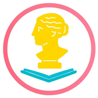

Виртуальный музей Улан-Удэ МАОУ СОШ №17 "Хранители Памяти"
80 лет Великой Победы

Главная
История школы
Памятники республики Бурятия
Архив Уголка Боевой Славы
Предметы эпохи
Война в истории моей семьи
СВО
Загрузка...